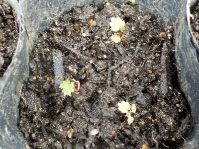
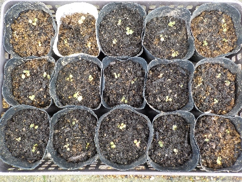

遊びで植物を育てよう
食べたイチゴのタネをまいて育てています。
更新日 : 2025/10/05
苺の極小苗をポットに植え替えしました。
更新日 / 2025/10/05

夏の間に触るのは危険だと思い、何もしていませんでした。10月で涼しくなったのでやっとポットに植え替えです。
極小で育つかどうか怪しいので。1つのポットに3本とか4本植えています。

食べたイチゴのタネを蒔いたんですが、思ったより発芽率が高く大量に苗があります。
実生で実が沢山出来るかどうかも分からないものなので、こんなに大量に要らなかったな。
TOP > 果物 > イチゴ
苺は美味しい。沢山食べたい。
【おいしいものを食べよう。】【たくさん寝よう。】
【ソロ活をしよう!】【季節感のあることをしよう。】【動画視聴はほどほどに。】【当サイトの全てのコンテンツは無断転載禁止です。】